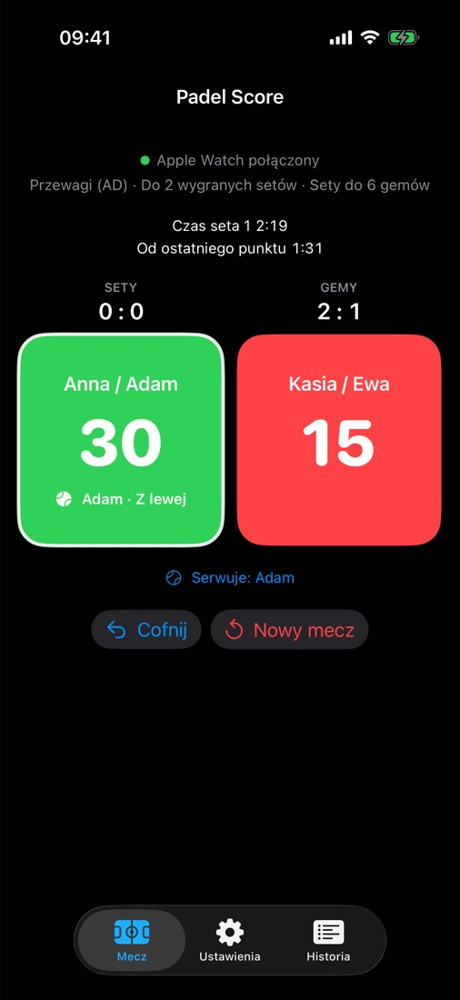
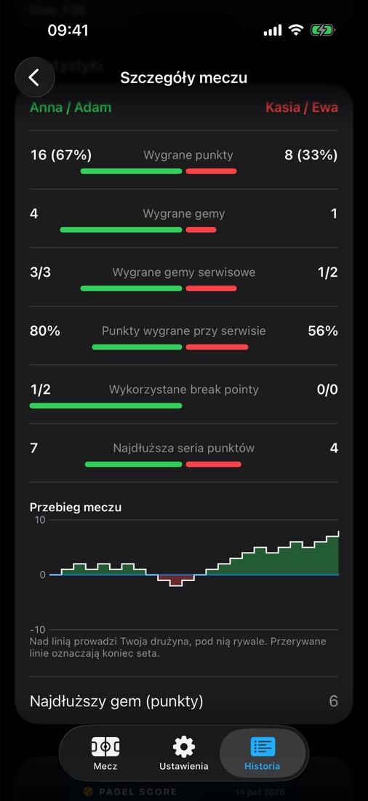

Licz wynik padla bez odrywania się od gry.Keep padel score without leaving the game.
Punkt to jedno stuknięcie albo gest dłonią. Gemy, sety, tie-breaki i serwis liczą się same.A point is one tap or a hand gesture. Games, sets, tie-breaks and serve are counted for you.
Wymaga iPhone'a z iOS 26.5 i Apple Watch z watchOS 26.5 lub nowszym.Requires iPhone with iOS 26.5 and Apple Watch with watchOS 26.5 or later.

FunkcjeFeatures
Wszystko, czego potrzebujesz na korcieEverything you need on court
Stworzone dla padla, nie przerobione z tenisa.Built for padel, not adapted from tennis.
Jedno stuknięcie na punktOne tap per point
Duże przyciski drużyn na zegarku, a gestem Double Tap bez dotykania ekranu. Pomyłkę cofasz jednym przyciskiem.Big team buttons on your watch, or Double Tap without touching the screen. Undo any mistake with one button.
Kto serwuje i skądWho serves, and from where
Rotacja serwisu z imionami graczy, strona serwisu i przypomnienie o zmianie stron.Serve rotation with player names, the serving side and a change-of-ends reminder.
Twój format meczuYour match format
Przewagi, Golden Point lub Star Point (FIP 2026). 1, 3 lub 5 setów, krótkie sety i super tie-break.Advantage, Golden Point or Star Point (FIP 2026). 1, 3 or 5 sets, short sets and super tie-break.
Statystyki meczuMatch statistics
Punkty, breaki, gemy serwisowe, serie i wykres przebiegu meczu.Points, breaks, service games, streaks and a match flow chart.
Wynik na ekranie blokadyScore on the Lock Screen
Live Activity i Dynamic Island na iPhonie. Zegarek i telefon zawsze pokazują to samo.Live Activity and Dynamic Island on iPhone. Watch and phone always show the same score.
Trening w ZdrowiuWorkout in Health
Opcjonalnie zapisz mecz jako trening: tętno i kalorie w historii meczów.Optionally save the match as a workout, with heart rate and calories in your history.
Double Tap
Graj z rakietą w dłoni. Licz punkty gestem.Keep the racket in your hand. Score with a gesture.
Stuknij palcem wskazującym o kciuk dłoni z zegarkiem. Nie musisz dotykać ekranu ani na niego patrzeć.Tap your index finger and thumb together on the hand with the watch. No need to touch or even look at the screen.
1×Punkt dla Twojej drużynyPoint for your teamJeden gest Double Tap.One Double Tap.
2×Punkt dla rywaliPoint for the opponentsDwa gesty pod rząd.Two gestures in a row.
Różne wibracje potwierdzają, komu przybył punkt. Czas na drugi gest ustawisz w menu zegarka. Wymaga Apple Watch Series 9 lub Ultra 2 albo nowszego.Distinct haptics confirm who got the point. Set the time for the second gesture in the watch menu. Requires Apple Watch Series 9 or Ultra 2 or later.
Gotowy na gestReady for a gesture
Czeka na drugi gestWaiting for a second gesture
Formaty i zasadyFormats and rules
Gracie po swojemuPlay your way
Od towarzyskiego meczu po turniejowe zasady FIP.From a friendly match to FIP tournament rules.
Przewagi (AD)Advantage (AD)
Golden Point
Star Point FIP 2026
1, 3 lub 5 setów1, 3 or 5 sets
Krótkie sety do 4Short sets to 4
Super tie-break do 10Super tie-break to 10
Tie-break przy 6:6Tie-break at 6:6
Rotacja serwisuServe rotation
Zmiana stronChange of ends
Zobacz aplikacjęTake a look
Od pierwszego punktu do udostępnienia wynikuFrom the first point to sharing the result
MeczMatchWynik, gemy i serwującyScore, games and server
Zmiana stronChange endsPrzypomnienie we właściwym momencieA reminder at the right moment

StatystykiStatisticsBreaki, serwis i przebieg meczuBreaks, serve and match flow
UdostępnijShareGotowa grafika na Instagram i WhatsAppA ready image for Instagram and WhatsApp
Jak to działaHow it works
Trzy kroki do meczuThree steps to your match
Ustaw meczSet up the match
Wybierz punktację, liczbę setów i opcjonalnie wpisz imiona graczy.Choose the scoring, number of sets and optionally enter player names.
Graj z zegarkiemPlay with your watch
Po każdej wymianie stuknij drużynę albo użyj gestu Double Tap. iPhone może zostać w torbie.After each rally, tap the team or use Double Tap. Your iPhone can stay in your bag.
Sprawdź i udostępnijReview and share
Po meczu zobacz statystyki i wyślij grafikę z wynikiem znajomym.After the match, see the statistics and send the result image to your friends.
Twoje dane zostają u CiebieYour data stays with you
Bez konta, bez serwerów, bez reklam i bez śledzenia. PadelScore nie zbiera żadnych danych.No account, no servers, no ads and no tracking. PadelScore does not collect any data.